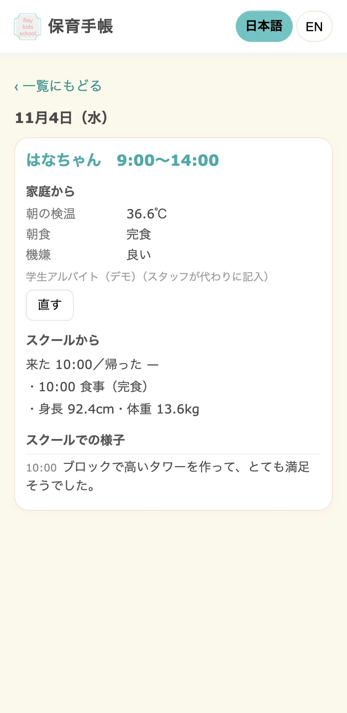
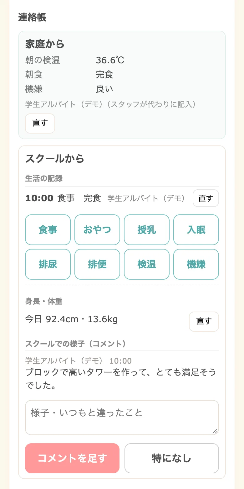
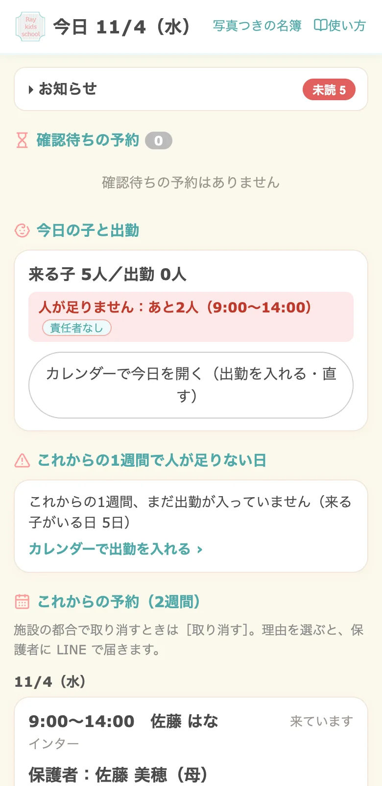

保育施設・一時保育・インターナショナルスクール向け

予約・連絡帳・シフト・請求をまとめて
保育の毎日を、

保育の毎日を、
LINE ひとつで。
保護者はいつもの LINE から予約と連絡帳。スタッフはスマホで記録。管理者は、今日の人手と月末の請求をひと目で。アプリのインストールは要りません。
インストール不要生成AIの聞き取り日本語・英語LINEなしのWeb版も
ご予約が確定しました。
11/4（水）9:00〜14:00
当日お待ちしています。
11/4（水）9:00〜14:00
当日お待ちしています。
おはようございます。
［今日の連絡帳を書く］
［今日の連絡帳を書く］
予約の電話と紙の台帳で、朝が終わる
LINEで予約・変更・キャンセル
連絡帳を手で書く時間が足りない
ボタンで記録、保護者にすぐ届く
この人数で、配置基準を満たせている？
足りない日を自動でお知らせ
月末の請求書と提供証明書が重い
記録から下書き、確認して送るだけ
保護者
いつものLINEで、
予約も連絡帳も。
- 空いている日を選んで予約。ごきょうだいはまとめて
- 朝の検温・体調を書くと、園での様子が返ってくる
- 身長・体重の記録、請求書・証明書もLINEに届く

スタッフ
記録はボタンで、
その場で。
- 登園・降園、食事・午睡・排泄・検温をワンタップ
- アレルギーや対応の目安を、子どものカードで確認
- 出られる日をカレンダーで出すだけのシフト提出

管理者
人手も請求も、
ひと目で。
- 今日の子と出勤、足りない時間帯がすぐ分かる
- 年齢別の配置基準・責任者の資格を自動で確認
- 請求書・領収証兼提供証明書を確認して送るだけ

画面は導入事例（Ray Kids school 様）の画面を、架空のデータで表示したものです。HackLab Inc.